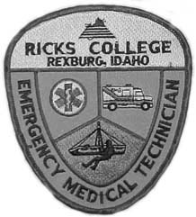

|
|
 |
|
|
 |
November 2, 1999
Dear Applicant:
Thank you for inquiring about the Ricks Paramedic Program. We appreciate your interest. This program is designed to help students attain both an Associate Degree and Paramedic Certification.
Enclosed you will find information about schedules, expenses, and candidate selection standards. If you are interested in becoming a paramedic and have completed the prerequisites, please complete an application and applicant reference form and submit it by February 15 to:
Paramedic Program
Ricks College
Rexburg, ID 83460-0610
You must also apply to Ricks College, and must be accepted as a full-time student by February 15.
If you desire to become a paramedic but have not completed the prerequisites in general education for the Associate Degree, a list of those prerequisites are in the packet. You should plan to become a student at a College or at Ricks College and satisfy the prerequisites, or be in the process, before applying to the Paramedic Program. If you have any questions or need assistance in applying, please contact us.
If you are interested in an exciting career in Paramedicine, please let us know.
Sincerely,
Janice J. Harrop
Paramedic Program Director
Ricks College
Rexburg, ID 83450-0610